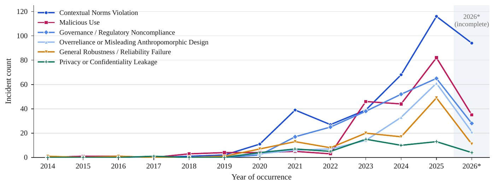
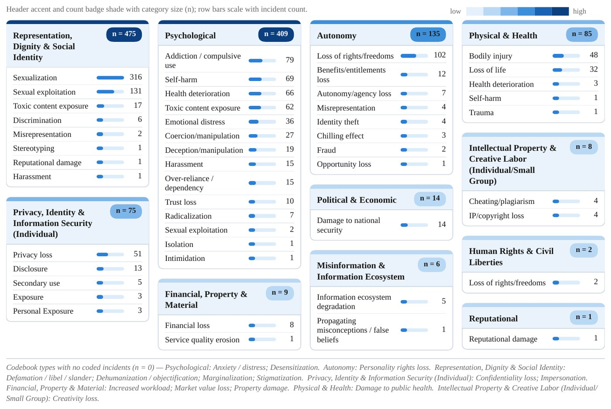
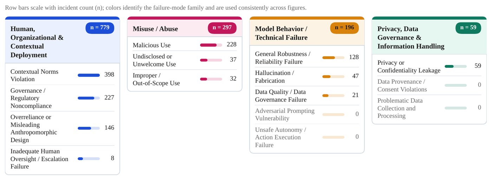
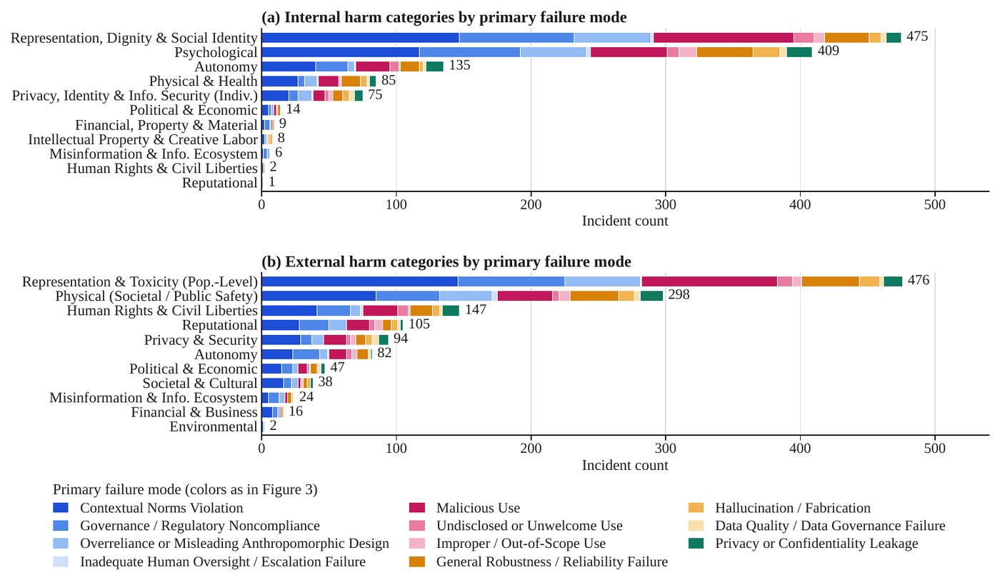
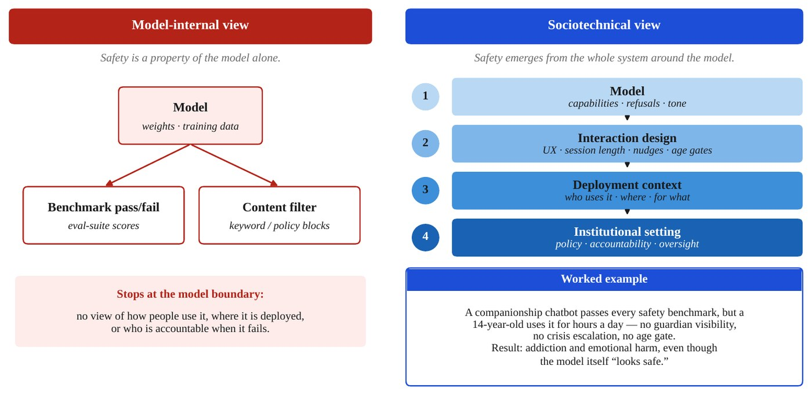

779incidents tied to deployment & organizational failures
316sexualization cases, the most common harm
Overview
Child safety in AI is usually judged at the model level, through benchmarks, red-teaming and content filters. This project asks what actually goes wrong once these systems reach children. We built KidAID, a corpus of 1,331 publicly reported incidents in which a minor experienced harm or a credible worst-case risk, drawn from the OECD.AI incident monitor, AIAAIC and the AI Incident Database. Each incident is coded with a child-specific internal (individual-level) harm, an external (population-level) harm, and the sociotechnical failure mode most directly implicated, using a new child-centered taxonomy.
Highlights
Harms concentrate in representational, dignity-related and psychological categories, led by sexualization (316), sexual exploitation (131), addiction / compulsive use (79) and self-harm (69).
Most failures are sociotechnical, not model defects: deployment and organizational failures (779) and misuse (297) far outnumber technical model failures (196).
Harm to one child often spreads to the population level. AI-generated images of a single student, for example, can circulate through an entire school.
Reported incidents were flat through the mid-2010s, rose sharply around 2020 and accelerated after 2022, with contextual norms violation becoming the leading failure mode.
Model-level evaluations are necessary but cannot anticipate these pathways alone. The paper recommends age assurance, content verification, safety-by-design UX, incident disclosure norms and audits targeting developmental risk.
Results

Most prevalent failure modes per year, 2014–2026 (2026 incomplete).

Taxonomy of internal (individual-level) harms, ordered by prevalence.

Taxonomy of sociotechnical failure modes; bar length indicates prevalence.

Internal (a) and external (b) harm categories by primary failure mode.

Why benchmarks miss these harms: a model-internal view of safety versus a sociotechnical one.
Method
Inclusion: AI is materially involved, at least one affected stakeholder is under 18, and the report supports coding a harm and a failure mode.
Dual-level harm coding links what happened to the child with the wider population-level harm.
Codebook developed iteratively; reliability checked on 150 double-coded incidents (Krippendorff's α = 0.73 for harm categories, 0.67 for failure modes).
Findings are descriptive counts of reported incidents, not causal estimates.
Jiao, J., Chen, K., Mishra, S., Murali, A., Atkinson, D., Raj, S., & Afroogh, S. (2026). Safe by benchmark, unsafe in practice: Lessons from 1331 child-related AI incidents. arXiv preprint arXiv:2610.34705.